・アリーナID
・ITCM上のアリーナ
・メインメモリ、拡張メインメモリ、DTCM、共有領域上のアリーナ
NITROモードの場合
TWLモードの場合
メインメモリアリーナの開始位置について
・ワークRAM上のアリーナ
NITROモードの場合
TWLモードの場合
・アリーナの管理とメモリ確保
TWL-SDK では、メインメモリ(ARM9用、ARM7用)、メインメモリ拡張部分、ITCM、DTCM、共有メモリユーザ部分、共用ワークRAM(ARM9用、ARM7用)、ARM7専用ワークRAM
の9つのアリーナ領域を設定することが出来ます。それぞれの領域にはOSArenaId
列挙型の値が IDとして振られています。
| ArenaID | アリーナ用途 |
|---|---|
| OS_ARENA_MAIN | メインメモリ上のアリーナ(ARM9専用) |
| OS_ARENA_MAIN_SUBPRIV | メインメモリ上のアリーナ(ARM7専用) |
| OS_ARENA_MAINEX | メインメモリ上の拡張アリーナ |
| OS_ARENA_ITCM | ICTM上のアリーナ |
| OS_ARENA_DTCM | DTCM上のアリーナ |
| OS_ARENA_SHARED | 共有メモリ上のユーザ領域のアリーナ |
| OS_ARENA_WRAM_MAIN | 共有ワークRAM上のアリーナ(ARM9用) |
| OS_ARENA_WRAM_SUB | 共有ワークRAM上のアリーナ(ARM7用) |
| OS_ARENA_WRAM_SUBPRIV | ARM7専用ワークRAM上のアリーナ |
これらは OS_InitArena() と、一部が OS_InitArenaEx() で初期化されます。ARM7専用のメインメモリ上のアリーナと、ARM7用共有ワークRAM上アリーナと、ARM7専用ワークRAMアリーナを
ARM7 が、残りを ARM9 が設定します。
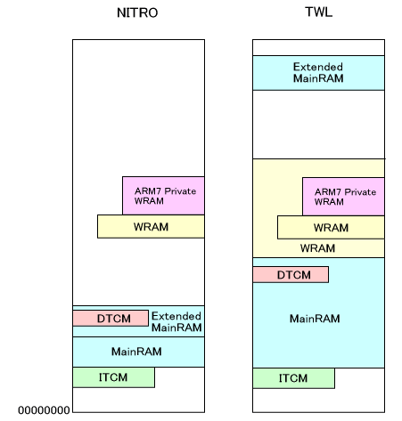
この部分は NITROモード、TWLモードで違いはありません。
ITCM はメインメモリの下位 0x01FF8000〜 0x01FFFFFF の 32KByte に位置しています。最下位部分に割込みハンドラなどSDKのプログラムコードが格納されます。次にユーザが設定していればオーバレイモジュールが配置されます。オーバレイで使用する最大のアドレスを考慮し、それ以降を ITCM アリーナとします。オーバレイが無い場合は、SDK_AUTOLOAD_ITCM_BSS_END からが ITCM アリーナとなります。
この ITCM アリーナの始まるアドレスは、SDK_SECTION_ARENA_ITCM_START として lcf ファイルで自動的に決定されます。
ITCMに配置されるコードは、割り込みハンドラとDMA関数の一部などです。この部分はautoload
機能によってTwlMain() が始まる前にITCMに転送されます。転送されるコードはユーザが追加で指定することも可能です。
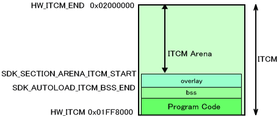
メインメモリ、拡張メインメモリ、DTCM、共有領域のアリーナについて説明します。この部分は NITRO モード、TWL モードで大きく異なります。
以下は NITRO ROM が NITRO モードで動作する場合と、TWL HYBRID ROM が NITRO モードで動作する場合についての説明です。ただし、後で説明しますが、両者では ARM9プログラムを配置するための開始アドレスが異なりますのでご注意ください。
OS_EnalbeMainExArena()によってメインメモリのサイズ設定が8MByteになっている場合には、メインメモリ上の拡張アリーナを使用することができますが、OS_DisableMainExArena()によってメインメモリのサイズ設定が4MByteになっている場合や実機で動作させる場合にはメインメモリ上の拡張アリーナは使用できません。 ( これらのメインメモリ拡張アリーナの使用/不使用を宣言する関数はOS_Init()やOS_InitArena()よりも前に呼び出す必要があります。)
下の２つの図は、メインメモリサイズが 8MByte に設定されている場合と、4MByte に設定されている場合を説明したものです。この中の、SDK_ で始まるシンボルは lcf ファイルで自動的に決定されます。HW_ で始まるシンボルは定数です。
DTCMの下位アドレスには、割り込み処理で使用するデータ領域が確保されます。ユーザが追加で領域を確保することも可能です。ただし、DTCMにはプログラムコードは配置できません。 ITCM と同様に、オーバーレイモジュールを配置した場合、それを考慮して DTCM アリーナの開始アドレス SDK_SECTION_ARENA_DTCM_START が決定されます。オーバーレイが無い場合、SDK_AUTOLOAD_DTCM_BSS_END と同値になります。
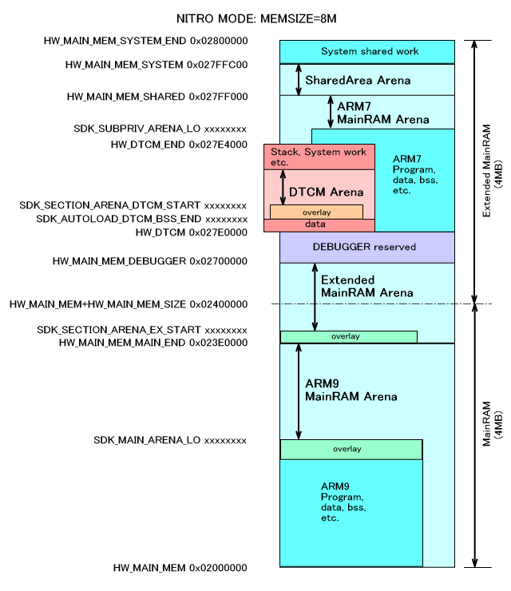
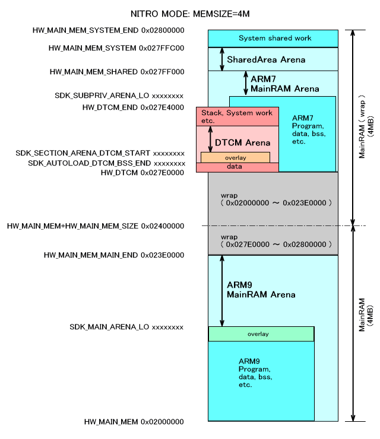
上の2つの図 (NITRO MODE: MEMSIZE=8M と NITRO MODE: MEMSIZE=4M) は、両方ともに NITRO ROM が NITRO MODE で動作する場合の図です。TWL HYBRID ROM が NITRO MODE で動作する場合は、ARM9 用のプログラム配置アドレスが 0x02000000 からではなく、0x02004000 からとなります。下はそれを図示したものです。
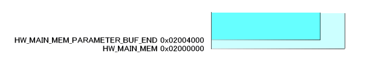
以下は TWL HYBRID ROM が TWL モードで動作する場合と、TWL LIMITED ROM が TWL モードで動作する場合の両方についての説明です。
OS_EnalbeMainExArena()によってメインメモリのサイズ設定が32MByteになっている場合には、メインメモリ上の拡張アリーナを使用することができますが、OS_DisableMainExArena()によってメインメモリのサイズ設定が16MByteになっている場合や実機で動作させる場合にはメインメモリ上の拡張アリーナは使用できません。 ( これらのメインメモリ拡張アリーナの使用/不使用を宣言する関数はOS_Init()やOS_InitArena()よりも前に呼び出す必要があります。)
下の２つの図は、メインメモリサイズが 32MByte に設定されている場合と、16MByte に設定されている場合を説明したものです。この中の、SDK_ で始まるシンボルは lcf ファイルで自動的に決定されます。HW_ で始まるシンボルは定数です。
DTCMの下位アドレスには、割り込み処理で使用するデータ領域が確保されます。ユーザが追加で領域を確保することも可能です。ただし、DTCMにはプログラムコードは配置できません。 ITCM と同様に、オーバーレイモジュールを配置した場合、それを考慮して DTCM アリーナの開始アドレス SDK_SECTION_ARENA_DTCM_START が決定されます。オーバーレイが無い場合、SDK_AUTOLOAD_DTCM_BSS_END と同値になります。
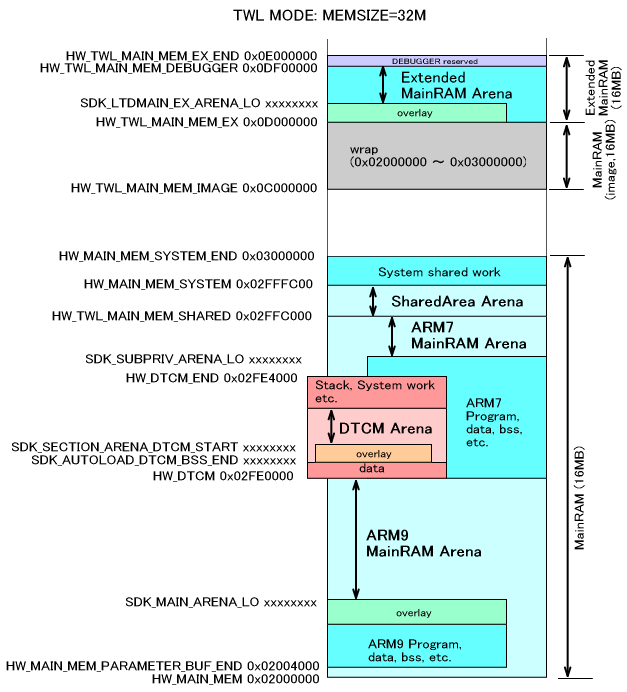
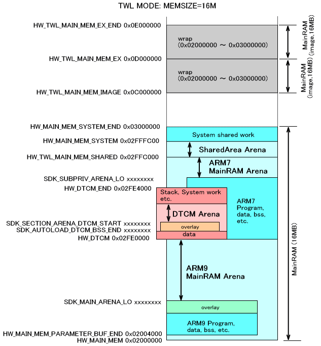
メインメモリアリーナの開始アドレスである SDK_MAIN_ARENA_LO は、メインメモリのスタティック部分と、overlayでロードされるプログラムやそのoverlay部分のBSS領域のもっとも後ろの位置になります。こうした考慮は ITCM や DTCM や 拡張メインメモリの overlay と同様です。
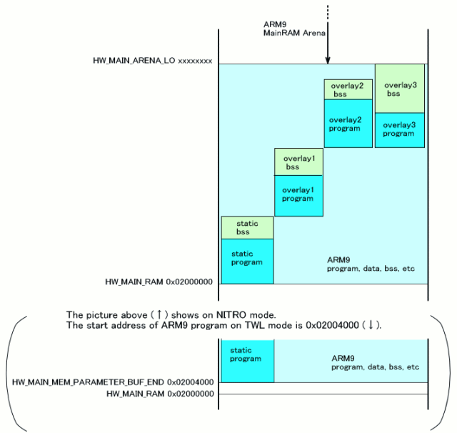
ワークRAM としては、NITRO の場合 ARM7専用WRAM(64KB) と ARM9/ARM7共用WRAM (32KB。WRAM-0/1) があります。NITRO ではこれらは全てARM7に割り当てられていますので、アリーナもARM7で使用することを想定しています。またそれぞれ連続領域として配置されますが、ARM7用のプログラムが格納され、その大きさで使用できるヒープが決まります。
まずARM7 のプログラムが32KB バイト以上あり、WRAM-0/1 を完全に使用している場合を考えます。この場合、プログラムの使用上限から、ARM7専用WRAM 上のシステム領域やスタックまでの領域が ARM7専用WRAM アリーナ (アリーナID OS_ARENA_WRAM_SUBPRIV) の領域となります。ARM7用WRAMアリーナ (アリーナID OS_ARENA_WRAM_SUB) は存在しません。また、ARM9 側にはWRAM がありませんので ARM9用WRAMアリーナ (アリーナID OS_ARENA_WRAM_MAIN) も存在しません。
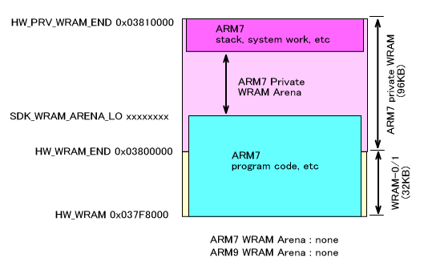
それに対し、ARM7側のプログラムが32KBより小さく、WRAM-0/1 に収まった場合は、下の図のように ARM7専用WRAM アリーナを取ることが出来ます。この場合でも、ARM9用WRAM アリーナはありません。
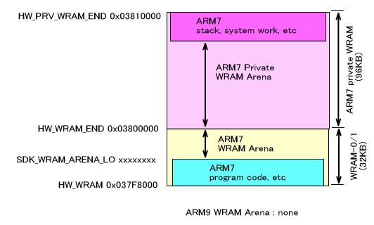
TWLモードでは、NITROモードよりも使用できるWRAM が増えます。ARM9/ARM7 の共用WRAM が 256KB (WRAM-A)、ARM9/ARM7/DSP の共用WRAMが 256KB x 2 (WRAM-B, WRAM-C) です。但しTWL-SDK では WRAM-A は必ず ARM7 が使用することになっています。
TWLとNITRO のハイブリッドROM と、TWL専用ROM とで WRAM の配置が若干異なります。具体的には、ハイブリッドROM では WRAM-0/1 と ARM7専用WRAM が連続するように配置されますが(NITROと同様です)、TWL 専用ROM の場合、WRAM-A と ARM7専用WRAM が連続するように配置されます。(詳細は MIの概要「ワークRAM」 を参照してください)
またアリーナの設定とは別に、ヒープの設定がこの部分は複雑になっています。詳細は OSの概要「メモリ割り当て」 を参照してください。
以下はTWL 専用ROMの場合(WRAM-A と ARM7専用WRAM が連続する場合) について説明します。TWL/NITRO ハイブリッドROM は NITRO モードと同じですので上の 「NITROモードの場合」を参照してください。
下は ARM7 のプログラムが 256KB 以上あり、WRAM-A を完全に使用している場合です。この場合、ARM7専用WRAMアリーナが図のように取られます。ARM7用WRAMアリーナは取ることが出来ません。ARM9用WRAMアリーナも存在しません。
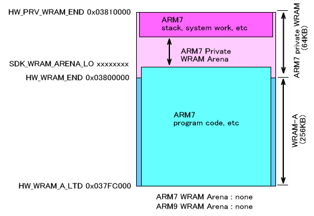
ARM7側のプログラムが256KBより小さく、WRAM-A に収まった場合は、下の図のように WRAM-A 上に ARM7専用WRAM アリーナを取ることが出来ます。この場合でも、ARM9用WRAM アリーナはありません。
アリーナ領域は、その先頭と末尾のポインタを示すことで存在しています。
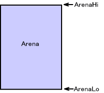
システムではこの２つのポインタと、アリーナが初期化されているかどうかの情報しか保持していません。つまりアリーナがどれだけ使用されているか、初期のポインタ位置がどこであったか、アリーナの中身がどうなっているか、といった情報はありません。
アリーナ領域の先頭と末尾ポインタ、そして初期化されているかの情報はそれぞれのアリーナにあり、まとめてシステム共有領域に置かれています。
アリーナからメモリブロックを確保するときは、領域の先頭からか、末尾からのいずれからのみ確保することが出来ます。メモリ領域の境界は自分で移動することになります。例えば領域の先頭(下位)から size1 バイト確保するときは、OS_GetArenaLo()を呼んだ後、返り値を境界に設定するためにOS_SetArenaLo()を呼ぶ必要があります。
領域の末尾(上位)から size2 バイト確保すると以下のようになります。この場合もOS_SetArenaHi()でアリーナ領域の境界をセットする必要があります。
なお、これら一連の作業を自動で行い、領域の先頭(下位)及び末尾(上位)から領域を確保することができるOS_AllocFromArenaLo()、OS_AllocFromArenaHi()が用意されています。アリーナを利用する際には、こちらの関数を使用することを推奨します。
このように、アリーナはゲーム中に頻繁にメモリを確保したり開放したりする用途には向いていません。多くは、初期化時に目的別に一括して領域を確保するといった大局的な割り当てのために使用されます。ゲーム中に確保や開放を繰り返すためには OS にOS_AllocFromHeap()といったメモリ割り当てシステムが用意されていますので OSの概要「メモリ割り当て」を参照してください。
2008/12/02 TWL HYBRID/LIMITED ROM のARM9プログラム開始位置を調整
2006/03/16 アリーナの管理とメモリ確保の図の修正、及び説明の追加
2005/08/27 ITCM, DTCM, 拡張メインメモリアリーナの overlay 対応に伴う修正
2005/07/28 ミスの修正
2005/04/15 メインメモリ、DTCM上のアリーナの位置を変更
2004/12/13 用語や語尾など修正
2004/10/25 初版。OS_InitArena() から独立